Before you start, a few things to know
This is the hub in the afternoon: patients across four rural hospitals, one intensivist watching all of them. Sidney is a small spoke hospital. Its inpatient unit is full, so a sick patient waits in the ED, looked after by a hospitalist APP and two nurses.
- Open the prototype on Monitoring. If you've already played it, use Prototype › Reset prototype first.
- Rosa isn't on the page yet. She arrives with the scenario, when the sepsis screen flags her.
- New to the page? The Scenario 1 storyboard walks through the hospital tabs, the quick filters, the monitoring cards and the alert notifications.
- Most beats arrive on their own, so keep her alert open. Once the video consult is on, the bedside documents the bundle over about 45 seconds (beats 3 and 4). Once you accept the pathway (beat 5), the rest plays over about 25 seconds (beat 6).
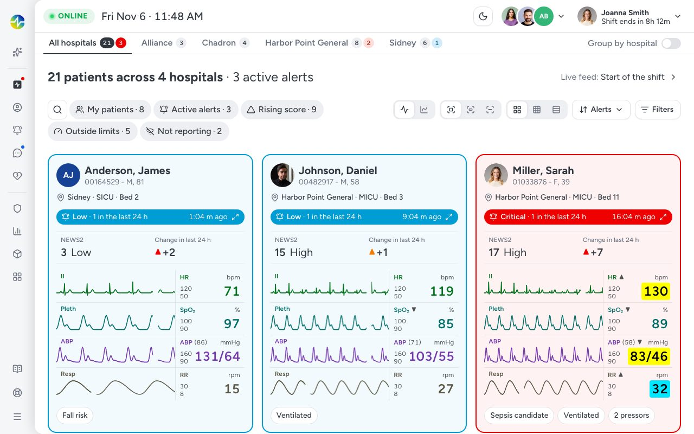
1. Sepsis screen fires
15:30Rosa Medina, 58. Type 2 diabetes with an A1c of 10.8, stage 4 kidney disease, high blood pressure. Three days of burning and left flank pain. Her pressure is 84 over 48, heart rate 124, temperature 39.4, lactate 3.8, glucose 390. The platform flags probable septic shock from her vitals and lactate, her APP confirms it at the bedside, and the hour-1 bundle timer starts, on the hub's screen and on Sidney ED's.
Steps
- Open Prototype at the bottom of the Sidebar and pick Scenario 3: Sepsis.
- About 2 seconds later Rosa's card joins the page, first, with its red Critical bar, and Sidney's tab counts her. Her alert toasts at the bottom right: Probable septic shock: hour-1 bundle started.
- Click her card's alert bar. Her alert opens with Pathway already out: the Hour-1 bundle, its timer counting down from 60:00, "Same timer on Sidney ED's screen", and the Lactate element already green, because the lactate behind the screen is in.
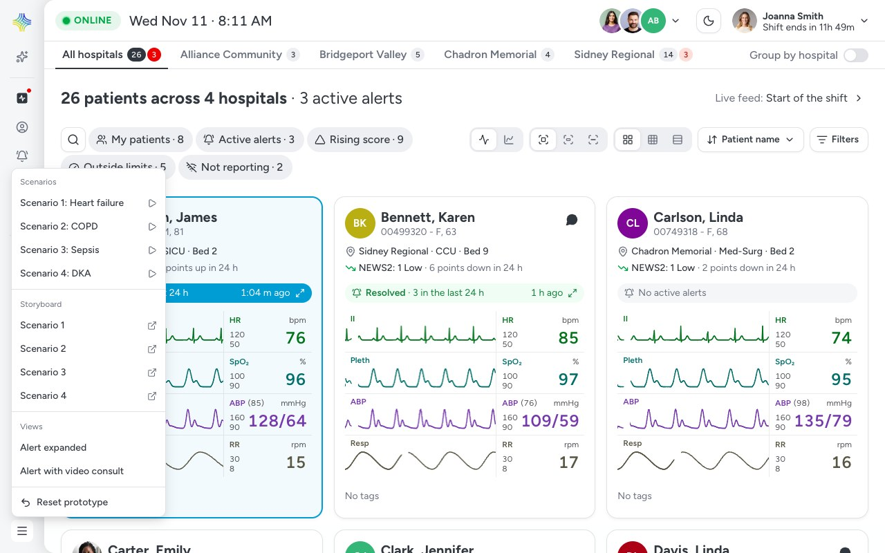
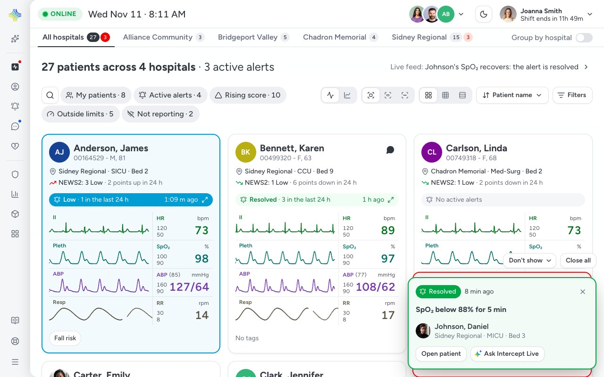
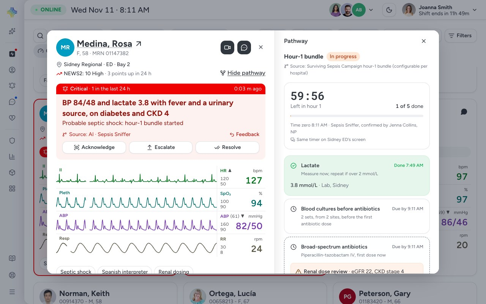
2. Interpreter in the room
Rosa prefers Spanish. Her daughter is with her, but care decisions go through a qualified medical interpreter, not the family. As soon as the call is on, the platform offers one, from her preferred language in the record.
Steps
- Click Video consult. It rings Ashley Brooks, RN, then goes live, and the bedside starts documenting the bundle (beat 3).
- Under the call: "Rosa prefers Spanish. Add a medical interpreter to the call?" Click Add interpreter.
- About 3 seconds later, Lucía Herrera joined the call, medical interpreter, Spanish. In the notetaker's transcript, Rosa speaks Spanish and Lucía gives it in English.
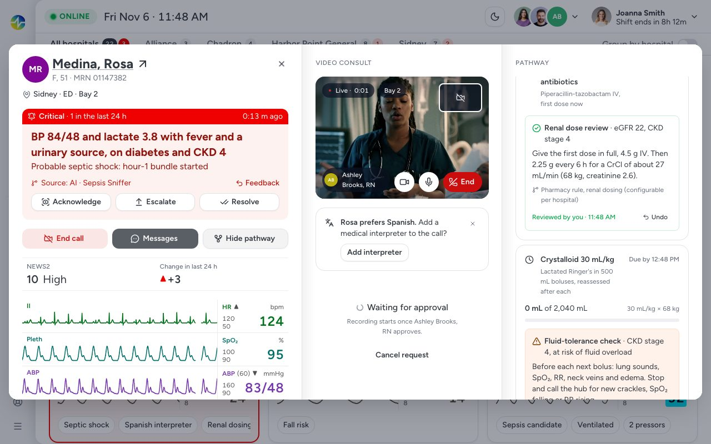
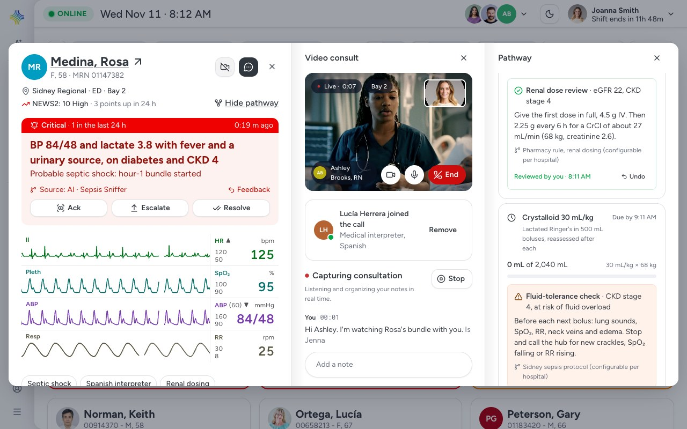
3. Bundle tracker
Hour 1Each element of the bundle turns green as it's documented at the bedside: lactate, blood cultures before antibiotics, broad-spectrum antibiotics, fluids, repeat lactate. The hub and the ED see the same list and the same clock, so nobody has to ask what's been done.
Steps
- Nothing to click. About 8 seconds into the call Blood cultures before antibiotics turns green: 2 sets, both arms, by Ashley Brooks, RN. About 7 seconds later, Broad-spectrum antibiotics: piperacillin-tazobactam 4.5 g IV.
- Scroll the Pathway panel to Crystalloid 30 mL/kg: 30 mL/kg × 68 kg is 2,040 mL. The boluses come in every 7 seconds, each with its reassessment.
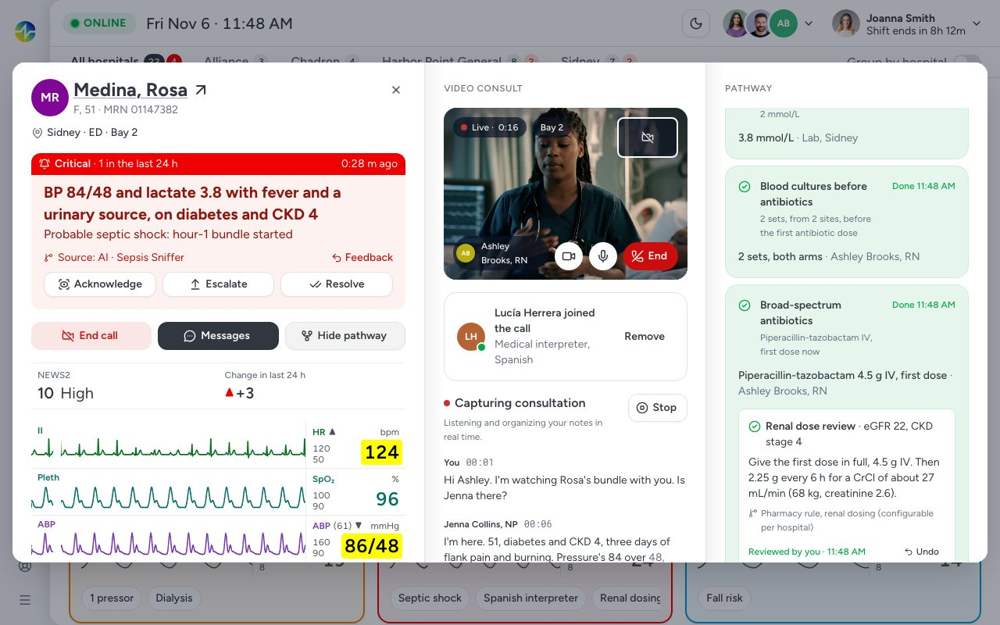
4. Chronic-aware safety checks
Her kidneys change two things. The antibiotic step flags her eGFR of 22 for a renal dose review: the first dose goes in full, the next ones are adjusted. And the fluid step shows the 30 mL/kg target next to a fluid-tolerance check, so her APP reassesses her lungs and oxygen after every bolus instead of giving it all blind.
Steps
- On Broad-spectrum antibiotics, read the Renal dose review: eGFR 22, first dose 4.5 g in full, then 2.25 g every 6 h for a creatinine clearance of about 27. Click Confirm dose: "Reviewed by you". You can do this before or during the call.
- On Crystalloid 30 mL/kg, read the Fluid-tolerance check, then each bolus as it arrives: "Tolerated: lungs clear, SpO₂ 95%, RR 22, MAP 61", by Jenna Collins, NP.
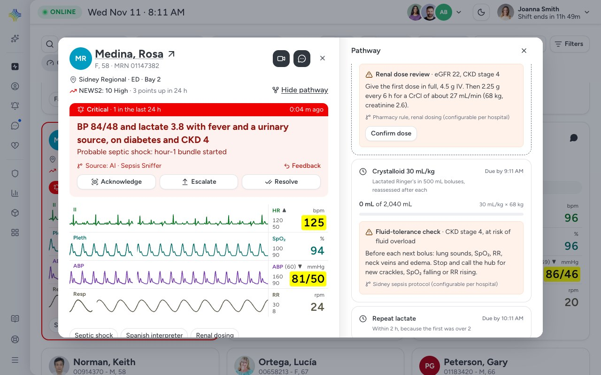
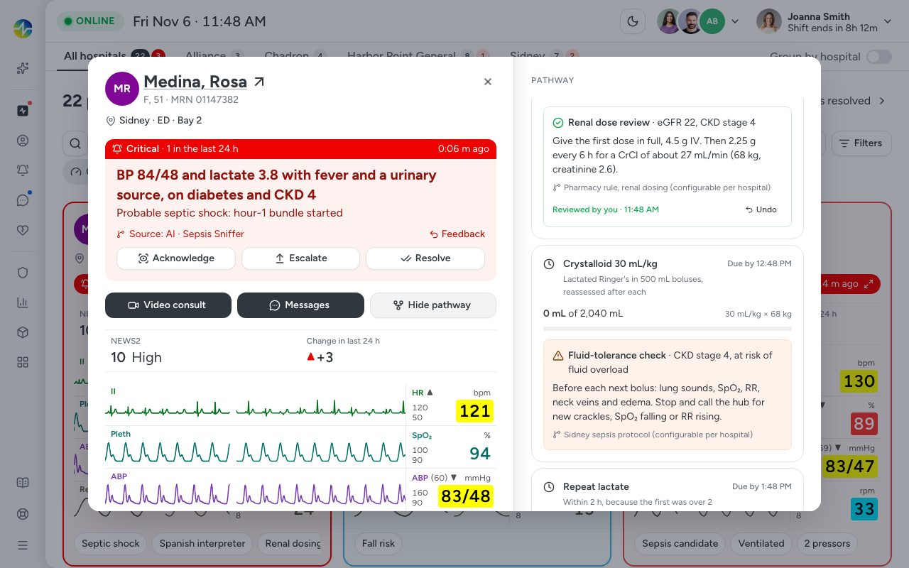
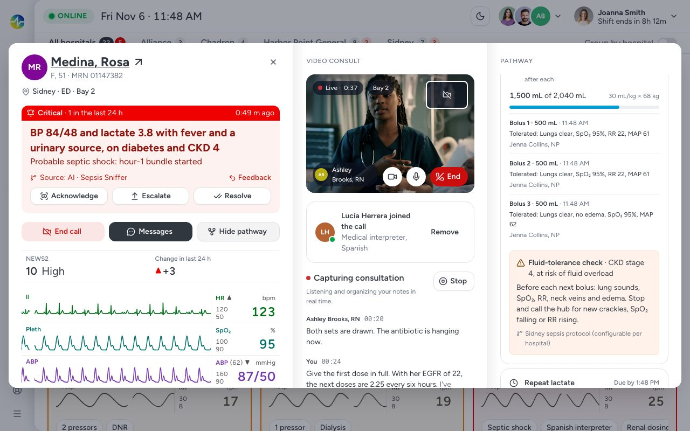
5. Vasopressor guidance
After 2 LAfter 2 liters her MAP is still 62. The intensivist guides peripheral norepinephrine per protocol, with an insulin infusion for her glucose. Accepting the orders turns them into the bedside nurses' tasks, the IV site checks a peripheral pressor needs among them, on a list the ED and the hub share.
Steps
- Nothing to click at first. About 45 seconds into the call the fourth bolus completes fluids (2,040 mL, green), and Septic shock after fluids opens under the bundle and scrolls into view: norepinephrine peripheral IV, the insulin infusion, the renal maintenance dose, and amlodipine held.
- Click Accept. About 4 seconds later it's Co-signed by Jenna Collins, NP, and Bedside tasks appears under it: IV site check every hour, blood pressure while titrating, glucose every hour, potassium, urine output, each with its nurse.
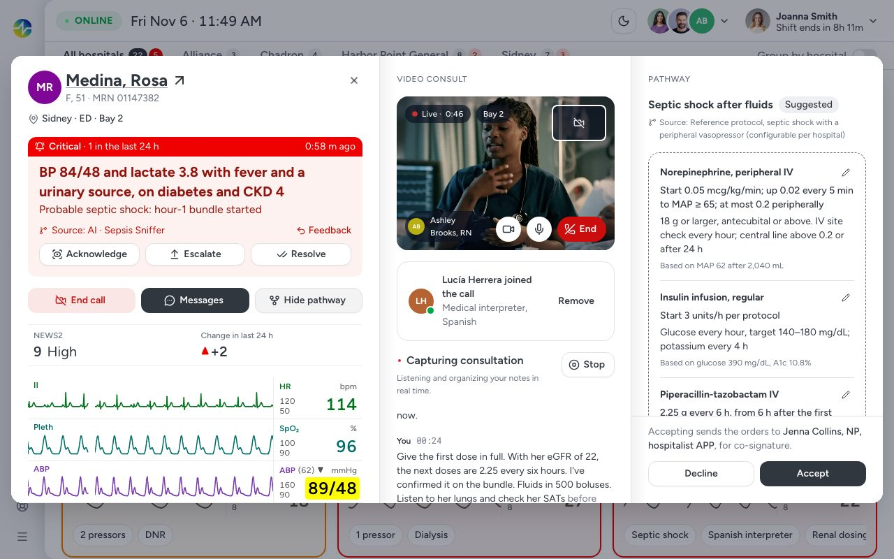
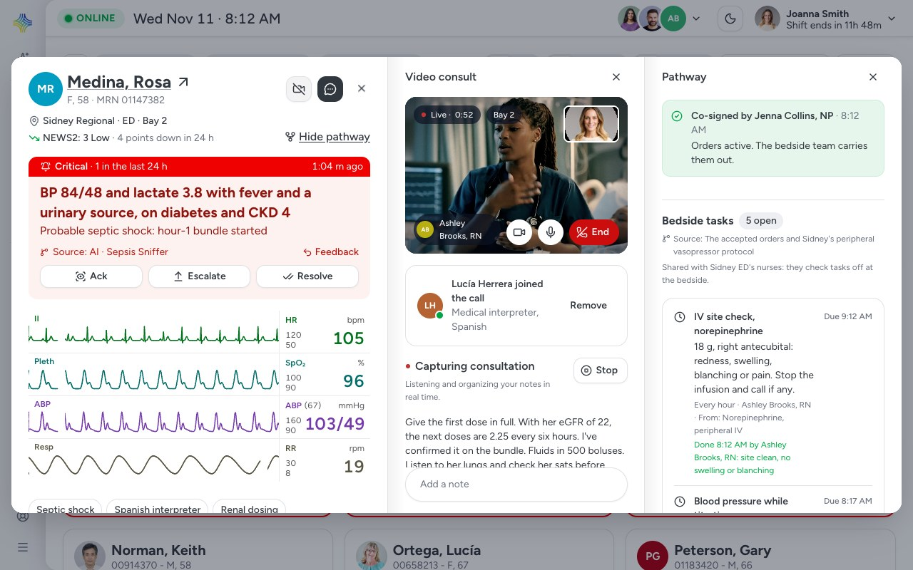
6. Glucose and resolution
6 h, then 12 hOn norepinephrine her MAP reaches 67, and the insulin infusion brings her glucose down. Her repeat lactate is 2.6, and the bundle is complete. By 6 hours her lactate is 1.6; by 12 hours she's off pressors, and when a bed opens she's admitted at Sidney, close to home, with the hub co-managing.
Steps
- Nothing to click. About 6 seconds after Accept: MAP 67, and the nurses tick off the first IV site check and blood pressure. About 6 seconds later the Repeat lactate turns green: the bundle reads Complete, 5 of 5.
- About 12 seconds after that her alert is Resolved by Jenna Collins, NP: off norepinephrine, MAP 83, admitted at Sidney's Med-Surg, Bed 6. Her score is NEWS2 0.
- Close her alert, then click her card. Her page shows the same night: the Sepsis tab tracks the SEP-1 bundle from the same time zero, and on Overview the log lists every step, with the outcomes recorded (time to antibiotics, bundle 5 of 5, time to MAP ≥ 65, pressor-free, cared for at Sidney, Medicaid, Spanish).
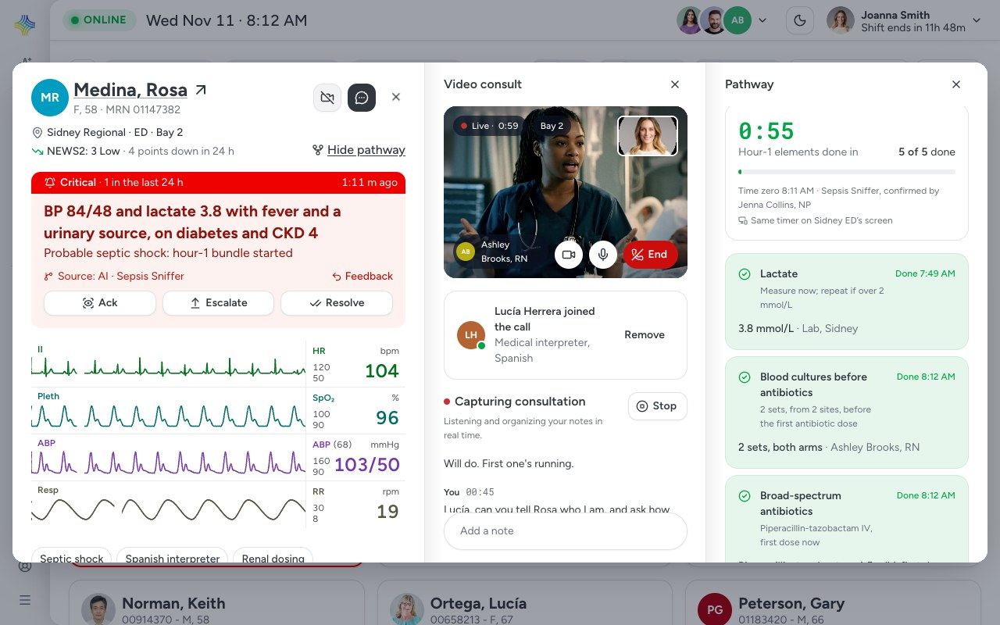
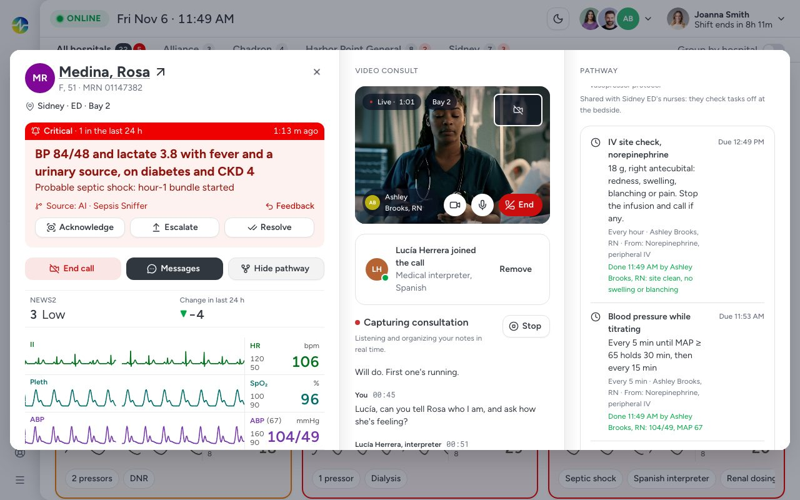
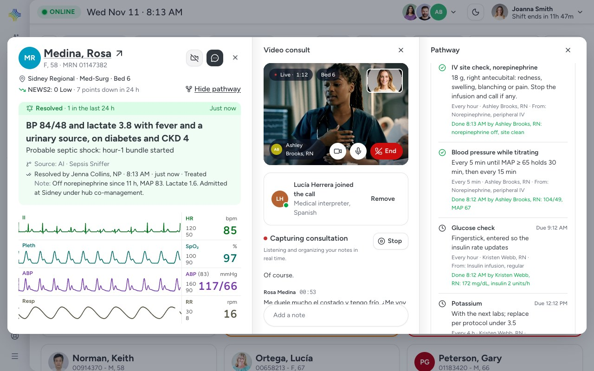
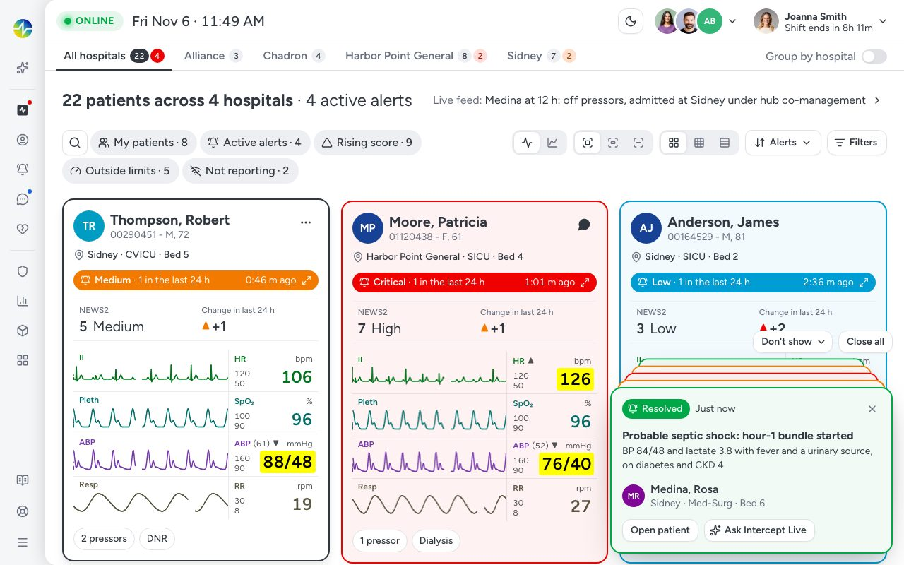
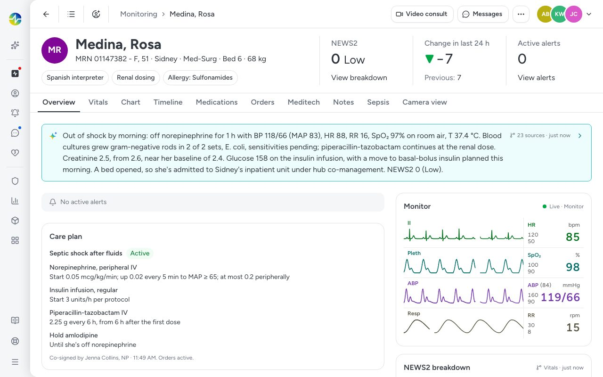
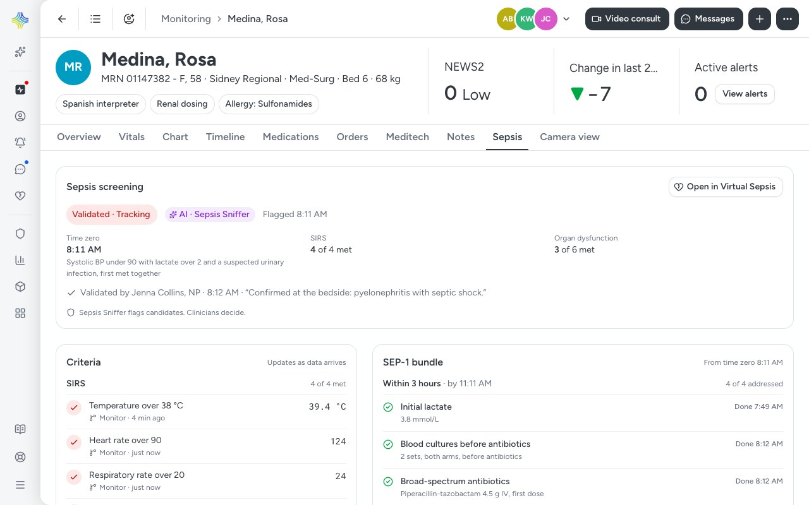
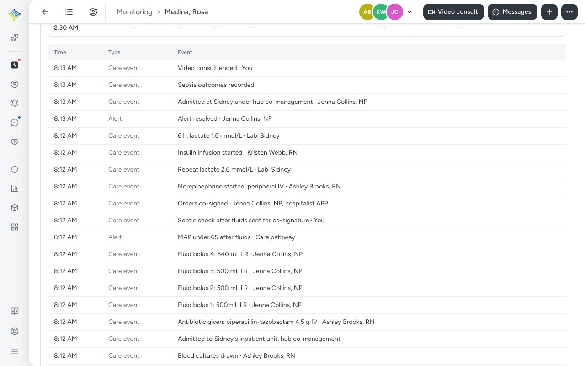
Known gaps
Where the prototype differs from the scenario, in case someone asks.
| What the audience sees | The scenario | Why |
|---|---|---|
| Today's clock time; the bundle is done in about a minute, 12 hours pass in under a minute | 15:30, the hour-1 bundle, then 6 h and 12 h | The prototype runs on the real clock |
| The hour-1 timer in her alert; SEP-1's 3 h and 6 h deadlines on her page | An hour-1 bundle timer | Which one the demo leads with is open (Requirements Q-15) |
| "Same timer on Sidney ED's screen" is a line of text | The timer on both the hub and the bedside screens | The bedside's screen isn't part of this prototype |
| The bedside tasks show only at the hub | Line-site checks built into the RN task list | The nurse's phone view (DU-25) isn't built yet |
| The interpreter is in the panel and the transcript, not the call's picture | An interpreter added to the video call | Mock, as the scenario marks it |
| The hub intensivist confirms the renal dose | "The antibiotic step flags eGFR 22 for renal dose review" | Who confirms it (the hub, the APP or pharmacy) is open |
| Orders and documentation stay in the prototype | — | Live write-back is funded work |
| Doses, the fluid target, the bundle elements | — | Illustrative; to align with the reported measure set and Intercept's peripheral vasopressor protocol (the scenario's clinical review) |